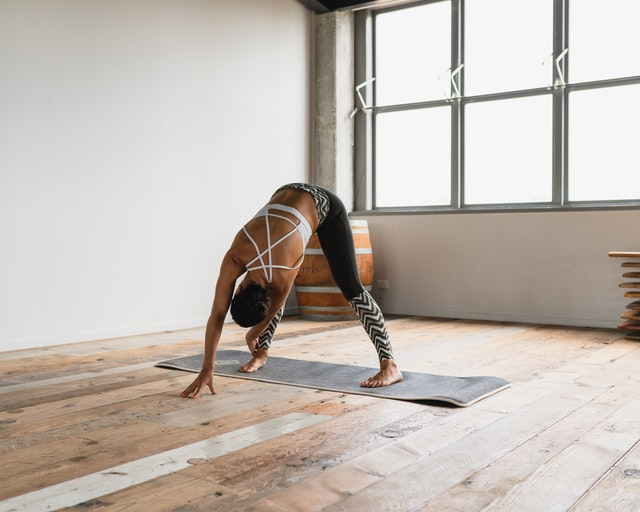
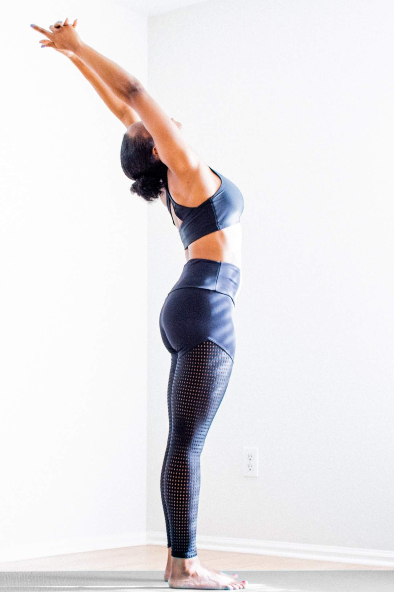
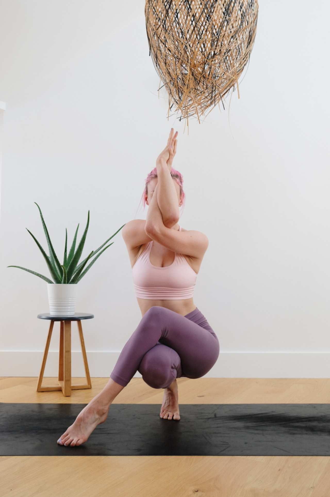

Individual & Group Classes

Hatha yoga
The Sanskrit term "hatha" is an umbrella term for all physical postures
of yoga. In the West, hatha yoga simply refers to all the other styles
of yoga (Ashtanga, Iyengar, etc.) that are grounded in a physical practice.
However, there are other branches of yoga such as kriya, raja, and karma
yoga that are separate from the physical-based yoga practice. The
physical-based yoga is the most popular and has numerous styles.
Iyengar yoga
Iyengar yoga was founded by B.K.S. Iyengar and focuses on alignment as well
as detailed and precise movements. In an Iyengar class, students perform a
variety of postures while controlling the breath. Generally, poses are held
for a long time while adjusting the minutiae of the pose. Iyengar relies
heavily on props to help students perfect their form and go deeper into


Kundalini yoga
Kundalini yoga practice is equal parts spiritual and physical. This style
is all about releasing the kundalini energy in your body said to be trapped,
or coiled, in the lower spine. These classes really work your core and
breathing with fast-moving, invigorating postures and breath exercises.
These classes are pretty intense and can involve chanting, mantra, and
meditation.
Ashtanga yoga
In Sanskrit Ashtanga is translated as "Eight Limb path." Ashtanga yoga
involves a very physically demanding sequence of postures, so this style
of yoga is definitely not for the beginner. It takes an experienced yogi
to really love it.
Ashtanga starts with five sun salutation's and five sun salutation's and
then moves into a series of standing and floor postures. In Mysore, India,
people gather to practice this form of yoga together at their own pace—if
you see Mysore-led Ashtanga, expected of you to know the series. Vinyasa
yoga stems from Ashtanga as the flowing style linking breath to movement.


Jivamukti yoga
Jivamukti was founded in 1984 by Sharon Ganon and David Life. Jivamukti
is mainly vinyasa flow-style classes infused with Hindu spiritual teachings.
A series of chants usually open the beginning of class followed up by
a series of poses that align with the five tenets of Jivamukti yoga and
philosophy. At its core, this style emphasizes connection to Earth as
a living being, so most Jivamukti devotees follow their vegetarian philosophy.